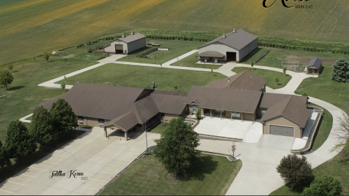
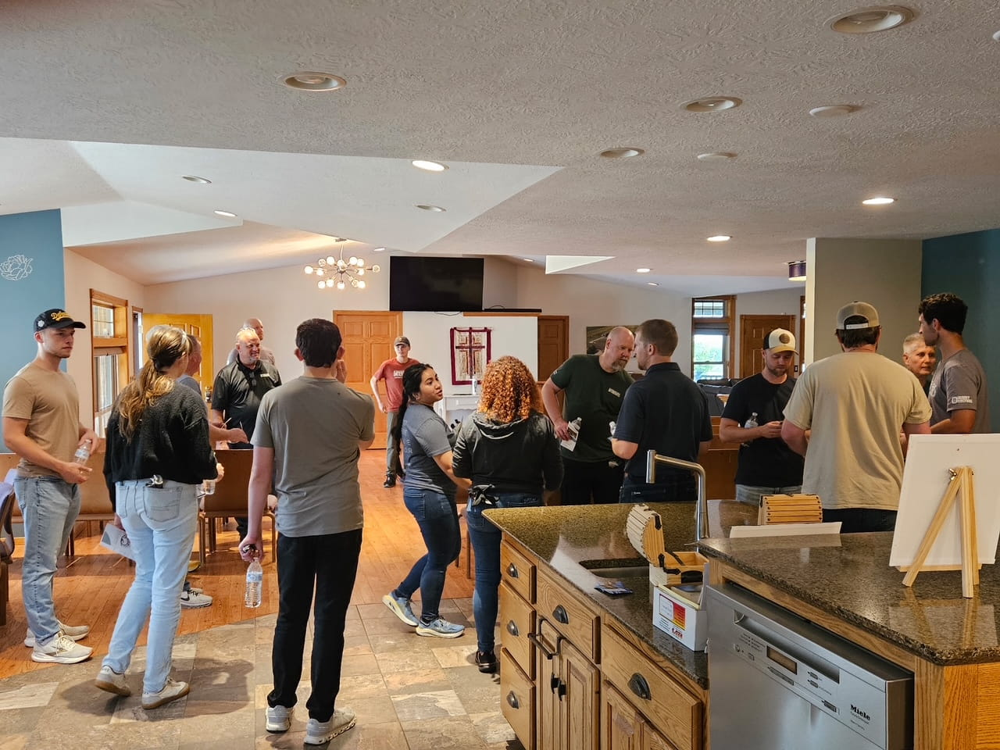
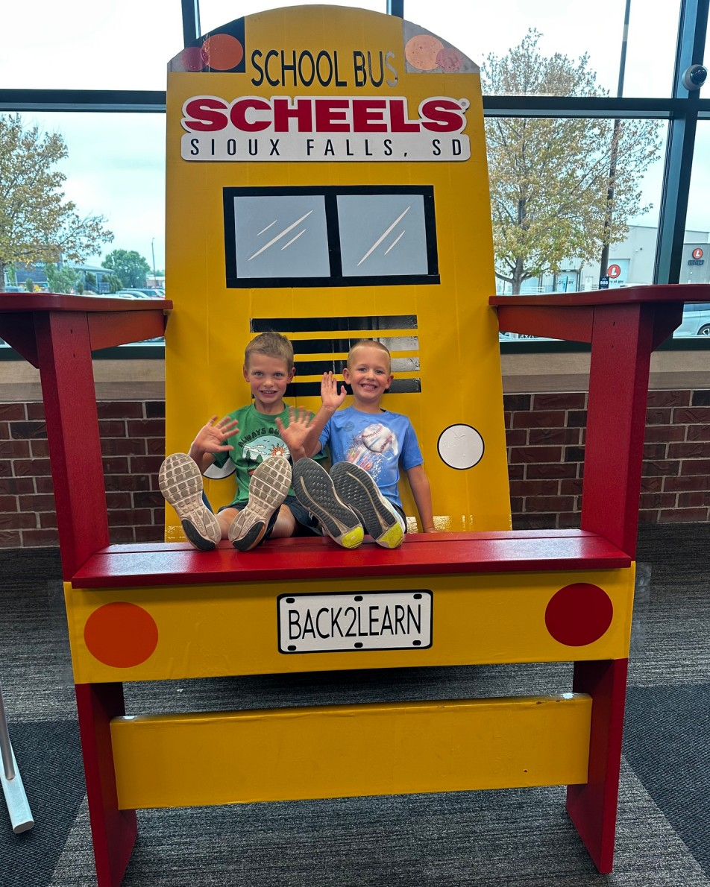
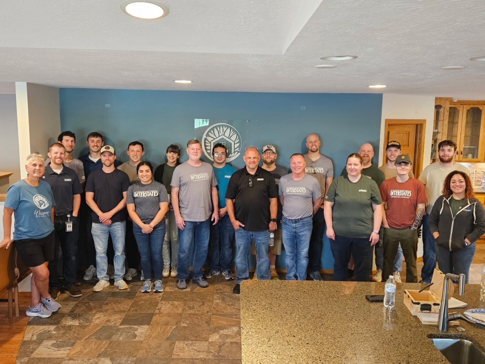
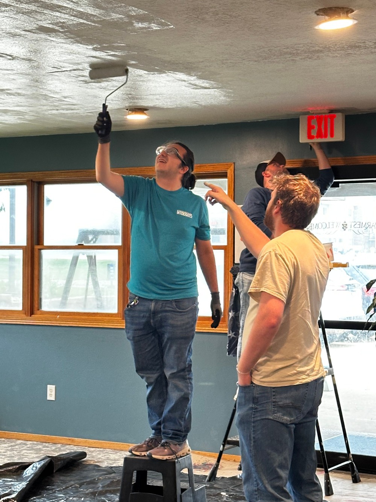
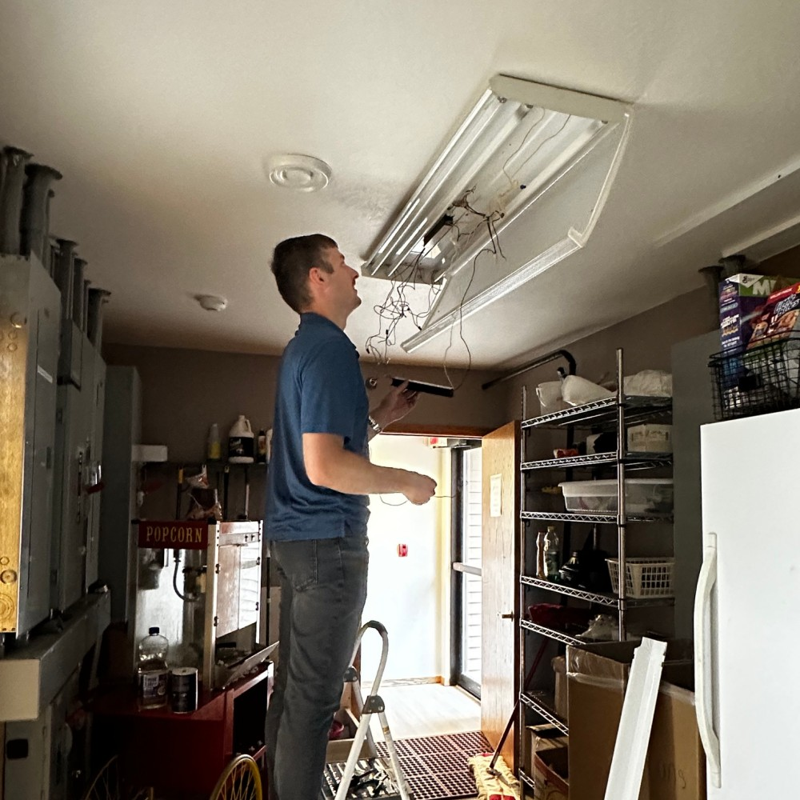
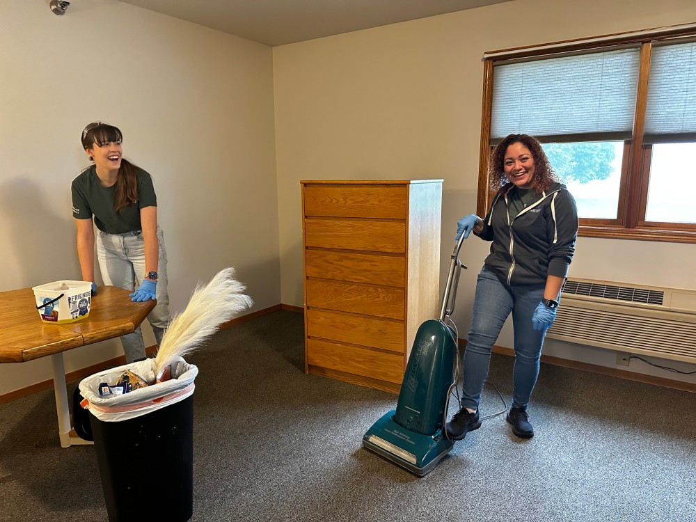
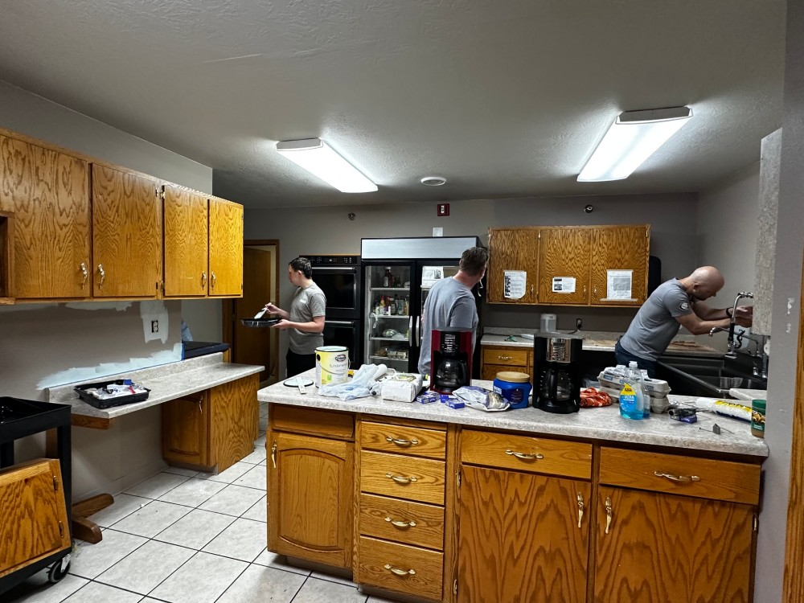
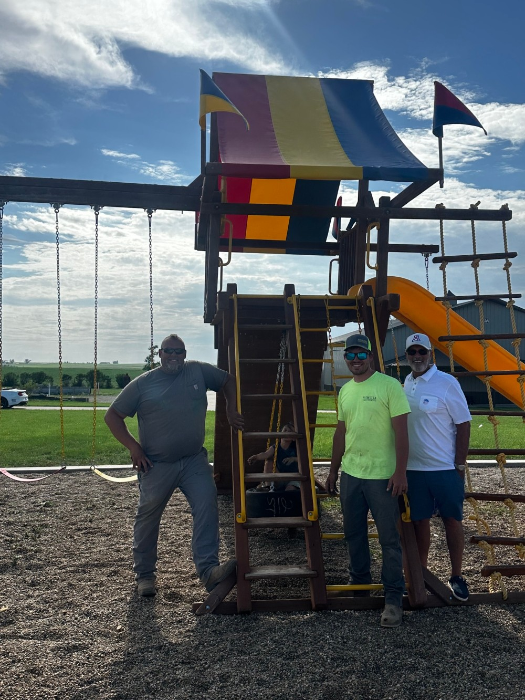

2
Family apartments
Room for mothers and children to live together with privacy, stability, and the rhythms of home.
03 Talitha Koum Healing Campus
Talitha Koum is a restorative, faith-based campus in Sioux Center where women and children can find safe housing, steady relationships, and the time to rebuild life at their own pace.

“Little girl, I say to you, get up!”
Mark 5:41

Where healing takes root
A safe apartment can create breathing room. Talitha Koum builds on that foundation with relationships, shared routines, practical learning, and a community that keeps showing up.
A private, secure place where daily life can begin to feel steady.
Support groups and shared spaces that make connection possible.
Time to heal, practice new skills, and make decisions without being rushed.
The campus
The former assisted-living property was reshaped into a secure, welcoming place where women and children can have a home of their own while remaining connected to support.
2
Room for mothers and children to live together with privacy, stability, and the rhythms of home.
6
Individual living spaces that offer safety, independence, and a place to exhale.
1
A place for support groups, meals, conversation, skill-building, and ordinary time together.
Safe
A robust security system helps residents feel protected and comfortable in their surroundings.
The Talitha Koum story
Whispers had already spent years meeting women wherever help was needed. Talitha Koum gave that work a home without changing its promise: show up, listen, and stay.

Before the campus
Beginning in 2017, Whispers met women in coffee shops, city parks, and courthouses. There was no office, only a commitment to be present.
A place becomes possible
The former assisted-living property became Talitha Koum, the Healing Campus, with apartments, shared space, and room for women and children to breathe.
The story continues
Today, safe housing, steady relationships, group support, and practical learning come together as women and families build what comes next.
Built with many hands
Talitha Koum continues to take shape through people who offer their time, practical skills, resources, and care. Each contribution helps create a place where healing can take root.






Support beyond the campus
Talitha Koum is one part of Whispers. Support remains available to women and families impacted by domestic abuse, whether or not they live on the campus.
Start a Conversation